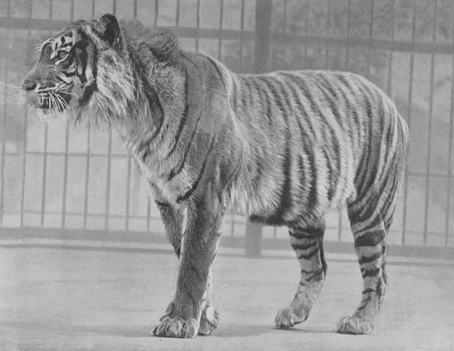

Contoh Tabel: Baris dan Kolom Rentang |
| Contoh Tabel Kompleks |
|
Perbandingan Harimau Sumatra dan Harimau Jawa |
 | |||
Harimau Sumatera |
Harimau Jawa |
||||
Family |
Family |
||||
Habitat |
Habitat |
||||
Perkiraan usia |
Perkiraan usia |
||||
Ordo |
Ordo |
||||